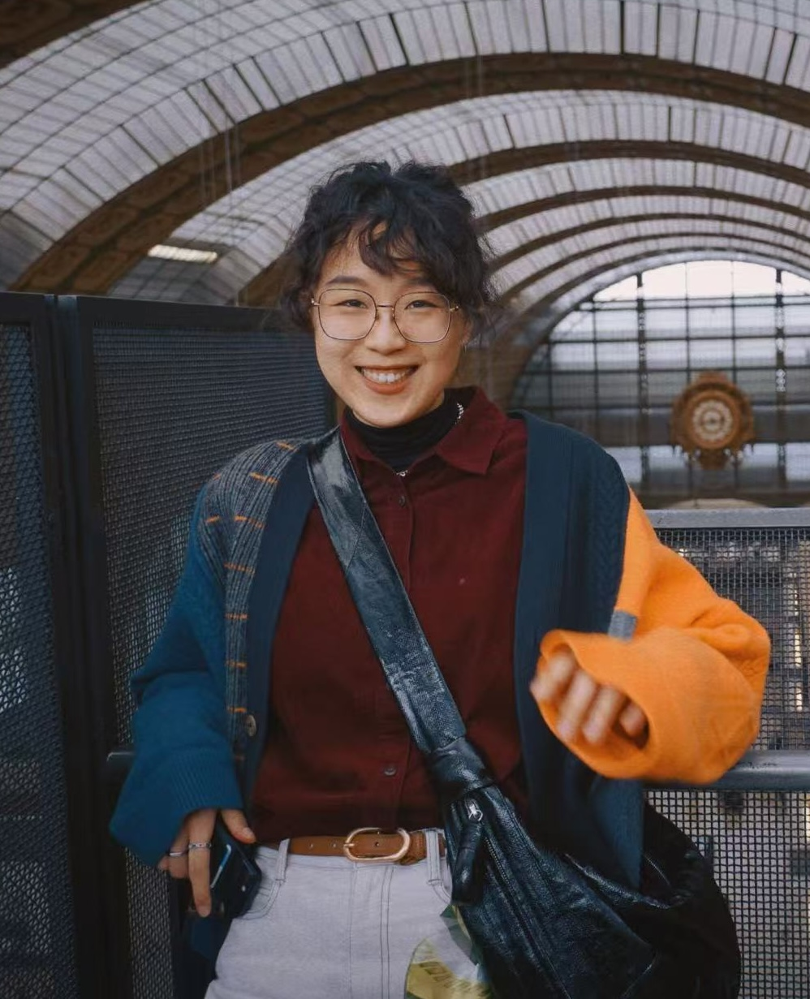

Su FAN, 自由撰稿人
关于我
精选作品
作品总览
联系方式
☀︎
☽
切换明暗模式
Biography
Su FAN 作品集
现为自由撰稿人，base 北京。
中英文流利，能从容应对双语采访与撰稿任务。
教育背景：经济学博士，北京大学（2025）；联合培养博士研究生，巴黎第一大学（2023）；经济学、社会学学士，北京大学（2020）。

31
公开发表作品
6
合作媒体
5
写作领域
合作媒体
Wallpaper中文版
ELLEMEN睿士
悦游CNTraveler
目的地Lab
生活力场
男人风尚
写作领域
人物与访谈
Profiles & Interviews
2 篇作品
城市、旅行与生活方式
Cities, Travel & Lifestyle
6 篇作品
设计、建筑与文化
Design, Architecture & Culture
6 篇作品
商业、科技与社会
Business, Technology & Society
8 篇作品
品牌特稿
Brand Features
9 篇作品